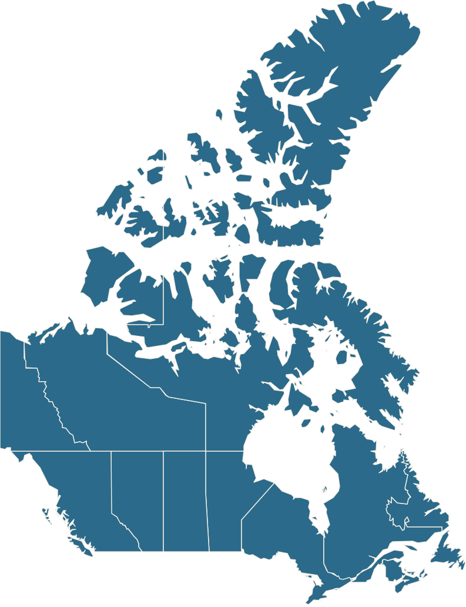
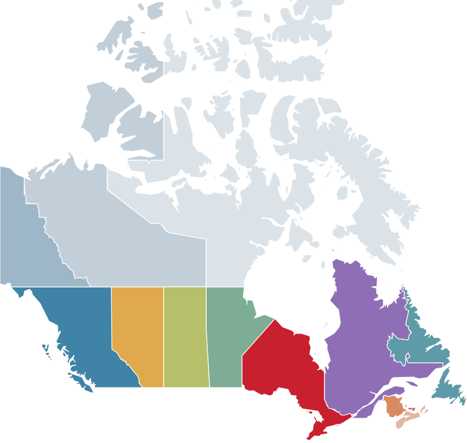
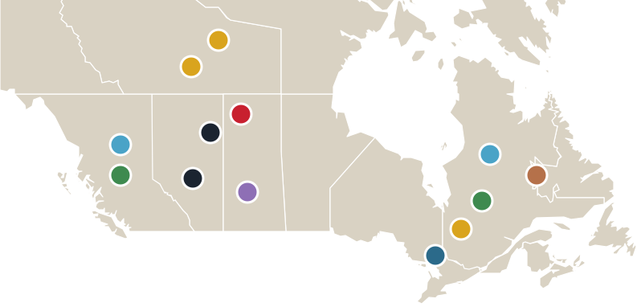
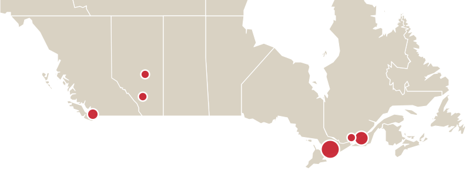
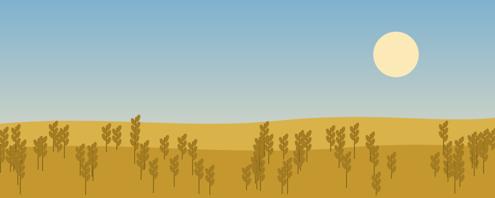
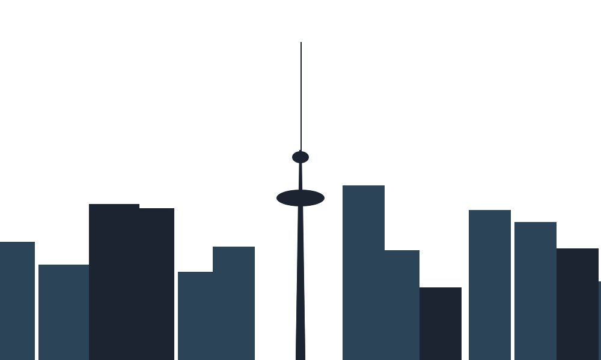
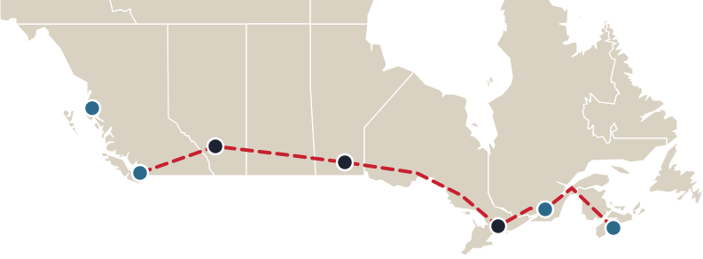

Економіко-географічна характеристика країни
Канада
Країна клена, озер і величезних просторів
Виконав: Гуцуляк Вадим
Зміст
План презентації
01
Економіко-географічне положення
Площа, устрій, оцінка ЕГП
02
Природно-ресурсний потенціал
Природні умови, корисні копалини
03
Населення
Демографія, склад, урбанізація
04
Господарство
Три сектори економіки, транспорт
05
Зовнішньоекономічні зв’язки
Експорт, імпорт, партнери
06
Висновки
Місце Канади у світовій економіці

1 · Економіко-географічне положення
Положення на карті світу
9,98 млн км²
друга за площею країна світу після Росії
Три океани
Тихий — на заході, Атлантичний — на сході, Північний Льодовитий — на півночі
Єдиний сусід — США
спільний кордон ≈ 8,9 тис. км — найдовший у світі між двома державами
1 · Економіко-географічне положення
Державний устрій
Федерація
10 провінцій і 3 території. Провінції самостійно керують освітою, медициною та ресурсами.
Парламентська монархія
Глава держави — король Карл III. Уряд очолює прем’єр-міністр.
Дві мови
Англійська та французька — офіційні. Столиця — Оттава.
Тип розвитку: високорозвинена країна
Член G7, НАТО, ОЕСР і G20; ринкова постіндустріальна економіка

BC
AB
SK
MB
ON
QC
NL
YT
NT
NU
NB
NS
PE
1 · Економіко-географічне положення
Адміністративний поділ
10 провінцій і 3 території. Столиця — Оттава.
BC Британська Колумбія
NS Нова Шотландія
AB Альберта
PE о. Принца Едуарда
SK Саскачеван
NL Ньюфаундленд і Лабрадор
MB Манітоба
YT Юкон (територія)
ON Онтаріо
NT Пн.-Західні території
QC Квебек
NU Нунавут (територія)
NB Нью-Брансвік
Мапа: південна частина країни. Дані карти: @svg-maps/canada, CC BY 4.0.
1 · Економіко-географічне положення
Оцінка ЕГП: вигідне
Переваги
- Вихід до трьох океанів і морських шляхів
- Сусідство з найбільшим ринком — США
- Багатство ресурсів на величезній території
- Політична стабільність і безпека
Недоліки
- Суворий клімат: Північ — зона вічної мерзлоти
- Великі відстані — дорогий транспорт
- Залежність від США: ≈ 3/4 експорту
- Слабка заселеність і освоєння Півночі
Висновок: ЕГП Канади вигідне
головні плюси — ринок США, океани та ресурси; мінуси — клімат і відстані
2 · Природно-ресурсний потенціал
Природні умови
Рельєф
Захід — Кордильєри (г. Логан, 5959 м), центр — рівнини, схід і північ — Канадський щит.
Клімат
Від арктичного на півночі до помірного континентального в центрі та морського на заході.
Води
Понад 2 млн озер, Великі озера, ріки Маккензі та Святого Лаврентія; ГЕС дають ≈ 60 % струму.
Біоресурси
Тайга та ліси покривають понад третину території; багаті рибні й хутрові ресурси.
Найвища точка — г. Логан, 5959 м
Понад 2 млн озер
≈ 9 % лісів світу

2 · Природно-ресурсний потенціал
Корисні копалини
Нафтові піски Альберти
Понад 160 млрд барелів — одні з найбільших запасів нафти у світі.
Нафта й газ
Альберта, Саскачеван
Калійні солі
Саскачеван — №1 у світі
Уран
Півн. Саскачеван (Атабаска)
Залізна руда
Лабрадор, Квебек
Нікель і мідь
Садбері (Онтаріо)
Золото й алмази
Абітібі, Пн.-Західні тер.
Ліс
Брит. Колумбія, Квебек
Гідроенергія
Квебек, Брит. Колумбія
3 · Населення
Демографічна характеристика
≈ 41 млн
населення країни (2024)
4 / км²
середня щільність — одна з найнижчих у світі
≈ 1,3
дитини на жінку — нижче рівня заміщення (2,1)
≈ 82 роки
середня тривалість життя
Природний приріст ≈ 0
Населення зростає майже лише завдяки імміграції: кожен четвертий канадець народився за кордоном.
3 · Населення
Вікова, етнічна та релігійна структура
Вікова структура
0–14 · 16 %
15–64 років · 65 %
65+ · 19 %
Склад населення
≈ 23 %
іммігранти — рекорд серед країн G7
≈ 5 %
корінні народи: перші нації, інуїти, метиси
1,2 млн+
українська діаспора — одна з найбільших у світі

Ванкувер · 2,7
Калгарі · 1,6
Едмонтон · 1,5
Торонто · 6,7
Оттава · 1,5
Монреаль · 4,3
3 · Населення
Урбанізація й агломерації
≈ 82 %
канадців живуть у містах
90 %
населення — у смузі до 200 км від кордону зі США
Мегалополіс Квебек — Віндзор
Монреаль, Оттава, Торонто: тут живе близько половини всіх канадців і зосереджена основна частина промисловості.
Кола на мапі — агломерації за кількістю населення (числа — млн осіб, оцінка 2021–2023).
4 · Господарство
Економіка: загальна характеристика
≈ 2,1 трлн $
номінальний ВВП
≈ 52 тис. $
ВВП на душу населення
Топ-10
економік світу; член G7
Структура ВВП за секторами
Послуги · 70 %
Промисловість · 28 %
Сільське господарство — лише ≈ 2 % ВВП, але Канада — один зі світових експортерів зерна.
Модель економіки: сировина + переробка + сфера послуг, орієнтація на експорт.
4А · Первинний сектор
Видобуток, ліс і риба
Нафта й газ
≈ 5 млн барелів нафти на добу — 4-те місце у світі.
Центри: Форт-Мак-Мюррей, Калгарі, Едмонтон
Руди й мінерали
№1 за калієм; лідер за ураном, нікелем, золотом, алмазами.
Центри: Саскачеван, Садбері, Лабрадор, Єллоунайф
Лісове господарство
Один зі світових експортерів деревини, паперу й целюлози.
Центри: Брит. Колумбія, Квебек, Онтаріо
Рибальство
Лосось (Тихий океан), омар і краб (Атлантика).
Центри: Нова Шотландія, Ньюфаундленд, Брит. Колумбія
4А · Первинний сектор
Сільське господарство
Прерії: зерно й олійні
пшениця, ріпак, ячмінь, горох — Саскачеван, Альберта, Манітоба
Тваринництво
яловичина — Альберта; молочне — Квебек і Онтаріо
Спеціалізація регіонів
кукурудза й соя — Онтаріо; виноград — долина Оканаган; картопля — о. Принца Едуарда

№1 у світі
за виробництвом сочевиці та кленового сиропу (Квебек дає ≈ 70 % світового), а також за експортом ріпаку (канола)
4Б · Вторинний сектор
Промисловість: особливості
≈ 3/4
обробної промисловості зосереджено в Онтаріо та Квебеку
Переробка власної сировини
метали, нафтопродукти, папір, харчові продукти
Експортна орієнтація
головний ринок збуту — США
Дешева енергія
ГЕС дають ≈ 60 % електроенергії, АЕС (Онтаріо) — ≈ 15 %
Іноземний капітал і високі технології
автомобілі, авіабудування, електроніка, ІТ
4Б · Вторинний сектор
Основні галузі та їхні центри
Автомобілебудування
Оквілл, Брамптон, Віндзор (Онтаріо)
Авіа- та космічна
Монреаль (Квебек)
Чорна металургія
Гамільтон, Сол-Сент-Марі (Онтаріо)
Кольорова металургія
алюміній — Квебек, нікель — Садбері
Нафтохімія
Едмонтон (Альберта), Сарнія (Онтаріо)
Целюлозно-паперова
Квебек, Брит. Колумбія, Онтаріо
Електроніка й ІТ
Оттава, Ватерлоо, Торонто
Харчова промисловість
Торонто, Монреаль, Вінніпег
4В · Третинний сектор
Сфера послуг
Фінанси
Торонто: біржа TSX і «велика п’ятірка» банків
Освіта й наука
університети Торонто, Монреаля, Ванкувера
Туризм
Ніагара, Банф, Квебек; ≈ 22 млн іноземців у 2019 р.
ІТ та штучний інтелект
Торонто, Монреаль, Оттава, Ватерлоо
Кіноіндустрія
Ванкувер і Торонто — «Голлівуд Півночі»
≈ 70 %
ВВП дають послуги, у них зайнято ≈ 4/5 працюючих

4Г · Транспорт
Види транспорту
Залізничний
Компанії CN і CPKC; перша лінія «від океану до океану» — 1885 р.; вузли: Вінніпег, Торонто, Монреаль
Автомобільний
Трансканадське шосе ≈ 7,8 тис. км — від Вікторії до Сент-Джонса
Морський
Порти Ванкувер, Монреаль, Галіфакс; шлях Святого Лаврентія виводить кораблі до Великих озер
Повітряний
Хаби: Торонто, Ванкувер, Монреаль, Калгарі; для Півночі — головний зв’язок
Трубопровідний
Нафто- і газопроводи з Альберти до США та на узбережжя Тихого океану

Ванкувер
Принс-Руперт
Калгарі
Вінніпег
Торонто
Монреаль
Галіфакс
4Г · Транспорт
Центри транспорту
Трансканадська магістраль (шосе й залізниця)
5 · Зовнішньоекономічні зв’язки
Структура експорту та імпорту
Частка у вартості товарного обороту; дані округлені й орієнтовні (за Statistics Canada, останні роки).
5 · Зовнішньоекономічні зв’язки
Головні торговельні партнери
Куди експортує

США
≈ 75 %

ЄС
≈ 5 %

Китай
≈ 4 %

Британія
≈ 3 %

Японія
≈ 2 %
Звідки імпортує
США
≈ 50 %
Китай
≈ 13 %
ЄС
≈ 10 %

Мексика
≈ 6 %
Японія
≈ 2 %
Торговельні угоди
USMCA / CUSMA (2020)
CETA з ЄС (2017)
CPTPP
ЗВТ Канада — Україна (2017)
Висновки
Канада — високорозвинена країна з вигідним положенням і величезними ресурсами
ЕГП
вигідне: три океани й ринок США
Ресурси
нафта, газ, калій, уран, ліс, вода
Економіка
топ-10 за ВВП; послуги ≈ 70 %

Канада
Дякую за увагу!
Запитання?
Джерела: Statistics Canada, Natural Resources Canada, World Bank, CIA World Factbook (дані округлені). Мапа: @svg-maps/canada (CC BY 4.0). Іконки: Font Awesome Free (CC BY 4.0). Прапори: flag-icons (MIT).